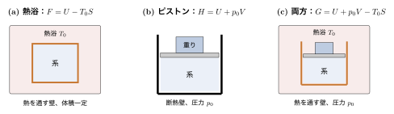
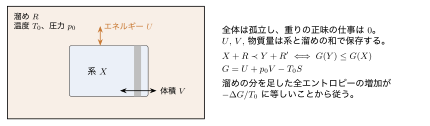

8 自由エネルギーとエンタルピー
エントロピー原理は、断熱的に孤立した系について、どの変化が起こりうるかを決める。 実験では、系を一定温度の熱浴や一定圧力のピストンと接したまま扱うことが多い。 系と接して、系とエネルギーや体積をやりとりする外部の装置や大きな系を、系の環境という。 そのときは、系と環境を合わせた全体にエントロピー原理を使い、環境の寄与を系の量で書き直す。 環境の種類ごとに、次の組み合わせが現れる (図 8.1)。
温度 \(T_0\) の熱浴だけと接する：Helmholtz 自由エネルギー \(F = U - T_0 S\)。
圧力 \(p_0\) のピストンだけと接する：エンタルピー \(H = U + p_0 V\)。
両方と接する：Gibbs 自由エネルギー \(G = U + p_0 V - T_0 S\)。
Clausius によるエントロピーの導入 [ 17 ] とは逆に、ここでは \(dS = \delta Q_{\mathrm{rev}}/T\) は定義ではなく結果である。

8.1 環境
系とエネルギーと体積をやりとりする単純系を考える。 その平衡状態 \(R\) の内部エネルギー \(U(R)\) (定義 67)、体積 \(V(R)\) (定義 94)、エントロピー \(S(R)\) (定義 79) が、どの \(R\) でも定数 \(T_0 {\gt} 0\), \(p_0\), \(\sigma \) を使って
を満たすとき、この単純系を温度 \(T_0\)、圧力 \(p_0\) の理想的な溜めという。 体積の変わらない単純系で、エントロピーが \(S(R) = \sigma + U(R)/T_0\) と書けるものを、温度 \(T_0\) の熱浴という。
熱浴は、体積を固定した溜めである。 体積が一定なら \(p_0 V(R)/T_0\) は定数なので \(\sigma \) に含められ、熱浴のエントロピーは \(U\) だけの一次式になる。 \(p_0 = 0\) を仮定する必要はない。
以下の定理で \(X + R\) と書くときの \(R\) は、溜めの平衡状態である。 溜めのエントロピーの微分は \(\partial S/\partial U = 1/T_0\)、\(\partial S/\partial V = p_0/T_0\) なので、\(T_0, p_0\) は溜めの温度と圧力 (定義 100, 107) である。
系の壁の一部を断面積 \(A\) の動く蓋にし、その上に質量 \(m\) の重りを載せた装置を、圧力 \(p_0 := m/A\) のピストンという。
系の体積が \(\Delta V\) 増えると、重りは \(\Delta V / A\) だけ上がる。 降下の記録から計算した仕事 (定義 49) は \(W = -m \Delta V / A = -p_0 \Delta V\) である。 ここでの圧力は重りの質量の単位で測っている。力の単位にするには、重力の換算係数 \(g\) を掛ける。
8.1.1 大きな溜め
実際の溜めは大量の水や大気のような大きな系で、そのエントロピーは一次式ではない。 溜めを大きくする極限で、系とのやりとりによる溜めのエントロピー変化が一次式で表せることを示す。 この意味で、理想的な溜めは大きな溜めの極限である。
\(s\) が \(x_0\) で微分可能なら \(\lambda \bigl(s(x_0 + \lambda ^{-1}\Delta ) - s(x_0)\bigr) \to s'(x_0)\Delta \) (\(\lambda \to \infty \))。
Fréchet 微分の方向微分としての特徴づけ。
大きさ \(\lambda \) の溜めの、内部エネルギー \(u\)、体積 \(v\) の状態のエントロピーを \(S_\lambda (u, v)\) とする。 示量性 \(S_\lambda (\lambda x) = \lambda s(x)\) が成り立ち、\(s\) が \(x_0\) で微分可能で \(\beta := \partial s/\partial u \ne 0\) とする。 \(T_0 := 1/\beta \), \(p_0 := (\partial s/\partial v)/\beta \) とおく。 溜めを状態 \(\lambda x_0\) から内部エネルギー \(\Delta U\)、体積 \(\Delta V\) だけ変えると、\(\lambda \to \infty \) で
示量性で左辺を \(\lambda \bigl(s(x_0 + \lambda ^{-1}(\Delta U, \Delta V)) - s(x_0)\bigr)\) に書き換え、極限の補題を使う。
右辺は理想的な溜め (定義 129) のエントロピー変化そのものである。 系とやりとりする \(\Delta U, \Delta V\) を固定して溜めだけを大きくすれば、どんな溜めも理想的な溜めに近づく。 \(T_0, p_0\) は、始めの状態 \(x_0\) での溜めの温度と圧力である。
8.2 Helmholtz 自由エネルギー
\(T_0 {\gt} 0\) に対し \(F_{T_0}(X) := U(X) - T_0 S(X)\) とする。 \(T_0\) には、系が接する熱浴 (定義 129) の温度をとる。
系と温度 \(T_0\) の熱浴 \(R\) の組成とエネルギーの和が保存するとする。 このとき \(X + R \prec Y + R' \iff F_{T_0}(Y) \le F_{T_0}(X)\)。
エントロピー原理で左辺を \(S(X + R) \le S(Y + R')\) に、加法性で \(S(X) + S(R) \le S(Y) + S(R')\) に書き換える。 熱浴のエントロピーを代入し、エネルギーの保存を使うと、全エントロピーの変化は \(-\Delta F / T_0\) に等しい。 これが非負であることは \(\Delta F \le 0\) と同値。
体積を変えずに熱浴と接している系は、\(F\) が最小の状態で平衡になる。
温度 \(T_0\) の熱浴 \(R\) と接した系を、断熱操作 \(p\) で \(X\) から \(Y\) に移すとする。 このとき、取り出せる仕事 \(-W(p)\) (重りを持ち上げた分) は \(F_{T_0}(X) - F_{T_0}(Y)\) を超えない。
内部エネルギーの存在定理から \(U(Y) + U(R') - U(X) - U(R) = W(p)\)。 エントロピー原理と加法性から \(S(X) + S(R) \le S(Y) + S(R')\)。 熱浴のエントロピーを代入して \(T_0\) 倍し、二つを合わせる。
内部エネルギーの減少 \(U(X) - U(Y)\) のうち、仕事として取り出せるのは \(F\) の減少分までである。 残りの \(T_0 (S(X) - S(Y))\) は熱として熱浴に渡さなければならない。 「自由」エネルギーという名前はこの意味である。 等号は可逆な操作で成り立つ。
8.3 エンタルピー
\(p_0\) に対し \(H_{p_0}(X) := U(X) + p_0 V(X)\) とする。 \(p_0\) には、系が接するピストン (定義 130) の圧力をとる。
重りの位置エネルギーを系に含めたものがエンタルピーである。
圧力 \(p_0\) のピストンと接した系の断熱操作 \(p : X \to Y\) で、仕事がピストンの重りの分 \(-p_0 (V(Y) - V(X))\) とそれ以外の \(W'\) に分かれるとする (定義 130 の後の注意)。 このとき \(H_{p_0}(Y) - H_{p_0}(X) = W'\)。
内部エネルギーの存在定理 \(U(Y) - U(X) = W(p)\) に代入する。
\(W'\) は電熱器やかき混ぜの仕事である。 定圧の熱量測定 (第 9 章) で測っているのは、このエンタルピーの変化である。 温度あたりのエンタルピーの増分が定圧熱容量 \(C_p\)、内部エネルギーの増分が定積熱容量 \(C_V\) である。
理想気体では \(H = (c + 1) N T\)。 したがって \(C_V = cN\)、\(C_p = (c + 1) N\)、\(C_p - C_V = N\) (Mayer の関係)。
\(U = cNT\) と \(pV = NT\) を足す。
断熱した管の中で、気体を圧力 \(p_1\) で多孔質の栓に押し込み、反対側に圧力 \(p_2\) で押し出す。 押し込む前の気体の状態を \((U_1, V_1)\)、押し出した後の状態を \((U_2, V_2)\) とすると \(U_1 + p_1 V_1 = U_2 + p_2 V_2\)。
二つのピストンがした仕事は \(p_1 V_1 - p_2 V_2\) で、これが内部エネルギーの増分に等しい。
絞り膨張ではエンタルピーが変わらない。 理想気体では \(H\) は温度だけで決まるので、温度も変わらない。 実在の気体で温度が変わることは、理想気体からのずれを示す。 気体の液化に使われるのはこの効果である。
8.4 Gibbs 自由エネルギー
一定温度・圧力の下での平衡条件は Gibbs [ 18 ] による。

\(T_0 {\gt} 0\), \(p_0\) に対し \(G_{T_0, p_0}(X) := U(X) + p_0 V(X) - T_0 S(X)\) とする。 \(T_0, p_0\) には、系が接する溜め (定義 129) の温度と圧力をとる。
理想的な溜めと接した系で、系と溜めの \(U\), \(V\) の和が保存するなら、\(\Delta S_{\text{全体}} = -\Delta G / T_0\)。
保存則を代入して整理する。
系と温度 \(T_0\)、圧力 \(p_0\) の溜め \(R\) の組成、エネルギー、体積の和が保存するとする。 このとき \(X + R \prec Y + R' \iff G_{T_0,p_0}(Y) \le G_{T_0,p_0}(X)\)。
エントロピー原理で左辺を \(S(X + R) \le S(Y + R')\) に、加法性で \(S(X) + S(R) \le S(Y) + S(R')\) に書き換える。 理想的な溜めの補題から、これは \(-\Delta G / T_0 \ge 0\) と同値。
次の二つの定理では、断熱到達性を断熱操作の存在 (定義 62) とし、\(U\) を複合系の内部エネルギー (定義 67) とする。 \(U\) が示量的であることは定理 69 で示したので、追加の仮定は要らない。
仕事 \(0\) の断熱操作で \(X + R\) から \(Y + R'\) に移れるなら \(G_{T_0,p_0}(Y) \le G_{T_0,p_0}(X)\)。
内部エネルギーの存在定理と示量性から \(U(X) + U(R) = U(Y) + U(R')\) となる。組成の保存は断熱操作の前提から出る。 あとは Gibbs の最小原理を適用する。
組成、エネルギー、体積が保存し \(G_{T_0,p_0}(Y) \le G_{T_0,p_0}(X)\) なら、\(X + R\) から \(Y + R'\) への仕事 \(0\) の断熱操作が存在する。
Gibbs の最小原理から断熱操作 \(p\) が存在する。 内部エネルギーの存在定理と保存則から \(W(p) = 0\)。
理想的な溜めの代わりに、大きな溜め (8.1.1 節) を使っても同じ判定が得られる。
大きさ \(\lambda \) の溜めのエントロピーが示量性 \(S_R(\lambda , \lambda x) = \lambda s(x)\) を満たし、\(\beta = \partial s/\partial u {\gt} 0\) とする。 \(T_0 = 1/\beta \), \(p_0 = (\partial s/\partial v)/\beta \) とおくと、\(\lambda \to \infty \) で \(\Delta S_{\text{全体}} \to -\Delta G_{T_0,p_0} / T_0\)。
示量性で溜めのエントロピー変化を \(\lambda (s(x_0 + \lambda ^{-1}\Delta ) - s(x_0))\) に書き換え、極限の補題を使う。
到達可能性が全エントロピーの増減で決まるとする。 \(G\) が厳密に減る変化は十分大きな溜めで到達可能、厳密に増える変化は到達不可能。 \(\Delta G = 0\) の場合はこの議論では決まらない。
極限が正 (負) なら、十分大きな \(\lambda \) で \(\Delta S_{\text{全体}}\) も正 (負)。
\(S = \beta U + \pi V + \sum _i \kappa _i N_i\) のとき、\(T, p, \mu _i\) を定理 115 のとおりにとると \(U + pV - TS = \sum _i \mu _i N_i\)。
代数計算。
系の温度と圧力が溜めの \(T_0, p_0\) に等しいとき、Gibbs 関数は \(G = \sum _i \mu _i N_i\) となる。 一成分なら、化学ポテンシャルは物質量あたりの Gibbs 関数である。
8.5 エネルギーとエンタルピーの最小原理
これまでの最小原理は、全体のエントロピーが増えることから、環境と接した系のポテンシャルが減ることを導いた。 内部エネルギーとエンタルピーについては、環境を使わない別の形の最小原理がある。 エントロピーが等しい状態の中で、平衡状態はエネルギーが最小になる、というものである。 エントロピー最大の原理から、温度が正であることを使って導く。
集合 \(P\) 上の関数 \(S, E\) と \(x \in P\) について、次の二つを仮定する。
\(E(y) = E(x)\) を満たす \(y \in P\) では \(S(y) \le S(x)\)。
どの \(y \in P\) と \(e {\gt} E(y)\) についても、\(E(y') = e\) かつ \(S(y) {\lt} S(y')\) を満たす \(y' \in P\) がある。
このとき、\(S(y) = S(x)\) を満たす \(y \in P\) では \(E(x) \le E(y)\)。
\(E(y) {\lt} E(x)\) とすると、二つ目の仮定で \(E(y') = E(x)\)、\(S(y') {\gt} S(y) = S(x)\) の \(y'\) がとれ、一つ目の仮定と矛盾する。
\(P\) を体積と組成の等しい状態の集まりとし、\(X \in P\) とする。 次の二つを仮定する。
内部エネルギーが \(U(X)\) に等しい \(Y \in P\) からは、\(X\) に断熱的に移れる。
どの \(Y \in P\) からも、かき混ぜでエントロピーを厳密に増やしながら、内部エネルギーを任意の値まで上げられる。
このとき、エントロピーが \(S(X)\) に等しい \(Y \in P\) では \(U(X) \le U(Y)\)。
一つ目の仮定とエントロピー原理から、\(U\) が等しい中で \(S\) は \(X\) で最大。 補題 148 を \(E = U\) に使う。
一つ目の仮定は、\(X\) が内部の拘束 (仕切りなど) を外して到達する平衡状態であることを表す。 例えば熱接触では、どの分配から始めても同じ結合系の平衡状態に移る (定理 103)。 二つ目の仮定は、温度が正であること (定理 101) の、\(\beta {\gt} 0\) の形である。
\(P\) を圧力 \(p_0\) のピストンと接した、組成の等しい状態の集まりとし、\(X \in P\) とする。 次の二つを仮定する。
エンタルピーが \(H(X)\) に等しい \(Y \in P\) からは、ピストンの重りだけが動く断熱操作で \(X\) に移れる。
どの \(Y \in P\) からも、定圧でかき混ぜてエントロピーを厳密に増やしながら、エンタルピーを任意の値まで上げられる。
このとき、エントロピーが \(S(X)\) に等しい \(Y \in P\) では \(H(X) \le H(Y)\)。
エネルギー最小原理の \(U\) を \(H\) に置き換えたものである。 ピストンの重りだけが動く断熱操作では \(H\) は変わらない (定理 137 で \(W' = 0\))。
8.6 ポテンシャルの微分
基本関係式 \(dU = T\, dS - p\, dV\) (定理 114) から、各ポテンシャルの微分が出る。 ここでの \(T, p\) は系自身の温度と圧力で、環境の \(T_0, p_0\) と等しい平衡状態の上で考える。 \(d\) は全微分の略記である (第 7.5 節)。
経路に沿って \(dU = T\, dS - p\, dV\) なら、\(F = U - TS\) について \(dF = -S\, dT - p\, dV\)。
積の微分法則と代入。
経路に沿って \(dU = T\, dS - p\, dV\) なら、\(H = U + pV\) について \(dH = T\, dS + V\, dp\)。
積の微分法則と代入。
経路に沿って \(dU = T\, dS - p\, dV\) なら、\(G = U + pV - TS\) について \(dG = -S\, dT + V\, dp\)。
積の微分法則と代入。
まとめると次のとおり。 どのポテンシャルも、環境が固定する量を変数とするとき微分が最も簡単になる。
|
ポテンシャル |
環境 |
微分 |
平衡で最小 |
|
\(U\) |
断熱、体積一定 |
\(T\, dS - p\, dV\) |
\(S, V\) 一定のとき |
|
\(H = U + pV\) |
断熱、圧力一定 |
\(T\, dS + V\, dp\) |
\(S, p\) 一定のとき |
|
\(F = U - TS\) |
温度一定、体積一定 |
\(-S\, dT - p\, dV\) |
\(T, V\) 一定のとき |
|
\(G = U + pV - TS\) |
温度一定、圧力一定 |
\(-S\, dT + V\, dp\) |
\(T, p\) 一定のとき |
多成分系では、どの微分にも \(\sum _i \mu _i\, dN_i\) が加わる。 最小原理は、\(U\) と \(H\) について定理 149, 150、\(F\) と \(G\) について定理 134, 142 で示した。